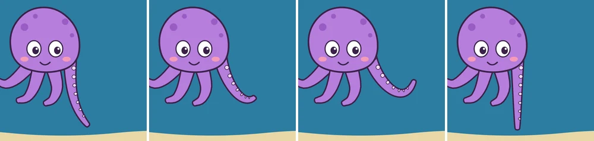
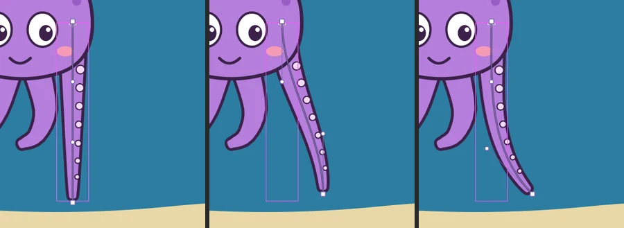

Tutorials
A tentacle with the Curve Deformer
Bend an octopus's tentacle along a curve by dragging its handles, pose it on three keyframes and tween it into a wave.
This page is also a lesson inside Phoenix: choose and start A tentacle with the Curve Deformer, and Phoenix points at each control as you go. It takes about 7 minutes.
To follow along here instead, download the starting document, curve-deformer.fla, and open it with .

The octopus's long tentacle is a graphic symbol of its own, Tentacle, on the Tentacle layer. It hangs straight down.
A Curve Deformer lays a curve, a spine, along a symbol's art. Drag the spine's handles and the art bends along it, keeping its thickness, without redrawing it.
1. Select the tentacle
Press V for the Selection tool and click the long tentacle, at the right of the octopus.
2. Add a Curve Deformer
Choose . A spine runs down the middle of the tentacle: a square anchor at each end, and two round handles between.
3. Swing the tip
Drag the square anchor at the bottom of the tentacle to the right. The tentacle bends to follow, and the round handle next to the anchor moves along with it.
4. Make it curl
Drag that lower round handle to the left, past the middle of the tentacle. The spine turns into an S, and the tentacle curls with it.

5. A second keyframe
Click frame 12 of the Tentacle layer and choose . Each keyframe keeps its own pose of the deformer.
6. Select it again
Click the tentacle on the stage, to show its handles on this keyframe.
7. Wave hello
Drag the square anchor at the tip up and to the right, until it is level with the octopus's cheek. The tentacle reaches up.
8. Curl the tip
The round handle next to the anchor came along with it, up beside the octopus's head. Drag it down, below the tip. The tentacle swoops down and curls up at the end, like a wave.
9. A third keyframe
Click frame 24 of the Tentacle layer and choose .
10. Select it once more
Click the tentacle on the stage, where it curls up beside the octopus.
11. Straighten it
Choose . The handles go back where they started, and the tentacle hangs straight again.
12. Tween the first half
Click frame 6 of the Tentacle layer and choose .
13. And the second
Click frame 18 of the Tentacle layer and choose . A classic tween bends the tentacle from one keyframe's pose to the next.
14. Play it
Press Enter, or click the play button in the timeline header. The tentacle sways, waves and hangs down again.
What you did
You bent a symbol along a curve and posed it on three keyframes. Each drag of a handle is one step to undo.
puts a grid of handles around the art instead, for squash and stretch, and Remove Deformer takes a deformer off. Shapes inside the symbol bend; pictures and text in it do not.
For everything this tutorial touches on, see Deformers.